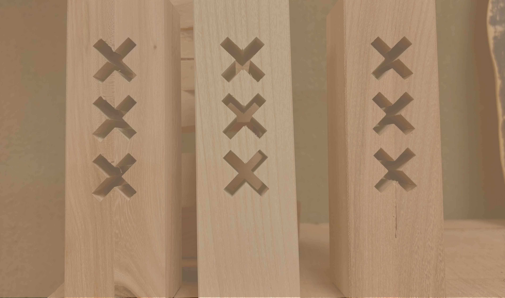

Missie
Missie en Visie
Stadshout zaagt boomstammen uit de regio Amsterdam tot bruikbaar hout voor het uitvoeren van projecten en het vervaardigen van producten binnen de regio, in samenwerking met haar lokale partners. Daarbij zet Stadshout zich in om de houtketen te optimaliseren door het vergroten van bewustzijn en het onderzoeken van innovatieve houttoepassingen om te zorgen dat het hout zo hoogwaardig mogelijk wordt gebruikt en geen enkele snipper verspild wordt.De MISSIE van Stadshout is bomen, die toch gekapt moeten worden, op duurzame wijze een tweede leven bieden in onze eigen stad en regio. Zo creëren we maatschappelijke waarde voor mens en milieu en dragen we bij aan een donut economie. Crisow en Marijke zijn de oprichters van Stadshout. Vanaf 2008 zetten zij zich in voor behoud en lokale toepassing van het hout dat afkomstig is van Amsterdamse bomen, die noodzakelijkerwijs gekapt moesten worden
Ontwerpen met impact
Wat we maken heeft effect op onze omgeving, en als ontwerpers moeten we hier bewust van zijn. Goed ontwerp is empatisch en verantwoordelijk, en wordt ontwikkeld met een zorgvuldige beoordeling van de context waarbinnen het gebruikt wordt. Rekening houden met niet alleen de materiële invloed op omgeving en resources, maar ook onze verhouding met objecten is van belang in het ontwikkelen van circulaire producten.
In het Kort
- Zaagt, droogt en verkoopt hout uit eigen stad aan lokale houtbewerkers & aannemers
- Werkt samen met ambachtslieden, architecten, en maatschappelijke werkplaatsen
- Verkoopt mooie eerlijke houtproducten en is tevens platform voor andere lokale makers